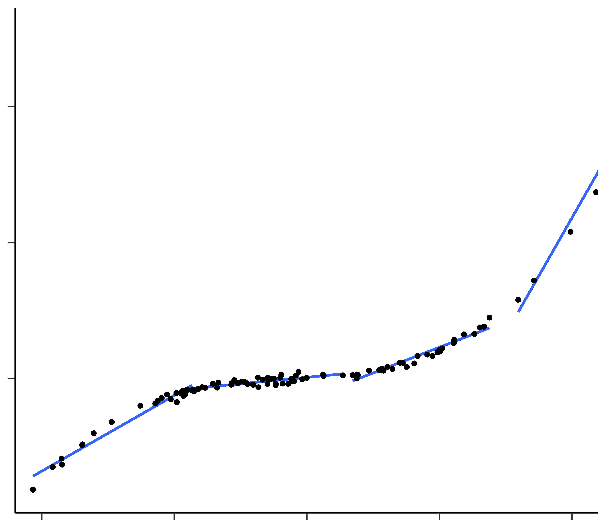

1. "Impulsivity predicts problem gambling in low SES adolescent males" (Vitaro, Arseneault, & Tremblay, 1999)
2. "Brain activity predicts how well visual experiences will be remembered" (Brewer, Zhao, Desmond, Glover, & Gabrieli, 1998)
3. "Early gesture selectivity predicts later language learning" (Rowe & Goldin-Meadow, 2009)
None of these papers actually demonstrated the predictive ability of the statistical models. Such assertions reflect the intuitive idea that a vast range of statistical models are, in a sense, predictive models.
Aspect
Description
Goal of Scientific Psychology
The aim of scientific psychology is to understand human behavior, encompassing the ability to explain behavior (describe its causal underpinnings) and predict behavior (forecast behaviors not yet observed).
Relationship Between Explanation and Prediction
Explanation and prediction are often perceived as deeply intertwined. It is commonly believed that the best model for explaining observed behavior is also the best model for predicting future behavior.
Statistical and Pragmatic Tension
Explanation and prediction can be in statistical and pragmatic tension. The model closest to the data-generating process is not necessarily the best at predicting real-world outcomes due to issues like overfitting. Complex models may outperform simpler but more accurate ones.
Choosing Between Explanation and Prediction
Researchers must choose whether to prioritize an explanation-focused strategy (identifying general principles) or a prediction-focused strategy (mimicking real-world outcomes without concerning how it's achieved) on a case-by-case basis.
Implications for Psychological Science
Researchers have traditionally favored an explanation-focused approach, but a prediction-focused approach can be more fruitful with the tools of predictive science and large-scale datasets. Psychology can move closer to becoming a predictive science.
Explanation vs Prediction
\[Y = f(X) + \epsilon\]
Here f is some fixed but unknown function and ε is a random error term, which is independent of the predictors. The main idea is that f represents the systematic information the predictors provide about the outcome.
Aspect
Definition
Key Differences
Inference
Deriving conclusions based on available evidence and reasoning.
Relies on existing data.
May not always be accurate.
Uses patterns and trends.
Does not Treat f(x) like blackbox.
Prediction
Anticipating future outcomes or events based on current knowledge.
Here \(E(Y-\hat{Y})^{2}\) represents the squared difference between the predicted and actual value of Y. The red part of the equation represents the reducible error, whereas, the green part of the equation represents the irreducible error.
Explanation Without Prediction
Aspect
Explanation
Scientific Value of Explanation
Explanatory science has immense scientific value and has led to significant achievements such as space exploration, disease control, and understanding molecular life origins.
Psychology's Emphasis on Explanation
Psychology's focus on explaining the causes of behavior has resulted in the development of mechanistic models of cognition. These models often have theoretical appeal but lack the ability to predict future behavior effectively.
Deficiency in Predicting Behavior
Psychology faces two main deficiencies in predicting behavior. Firstly, research papers in psychology often do not verify the predictive capabilities of their proposed models. They primarily rely on "goodness of fit" with sample data and the consistency of regression coefficients with theoretical perspectives. This approach doesn't guarantee predictive accuracy for out-of-sample data and may hinder prediction. Secondly, there is a replication crisis in psychology, with many published results failing to hold up in independent replication attempts. Models that explain behavior in one sample frequently fail to predict the same behavior in future samples.
Causes of Replication Failure
Replication failure in psychology is attributed to practices like "p-hacking" and questionable research practices that have been prevalent in the field. These practices have contributed to the inability of models to predict behavior accurately.
Principles of Machine Learning
Principle
Description
Feature Engineering
Feature engineering involves selecting, transforming, or creating relevant features from the raw data to improve the model's performance.
Overfitting
Overfitting occurs when a model learns the training data too well but struggles to generalize to new, unseen data. It's essential to balance model complexity to avoid overfitting.
Cross-Validation
Cross-validation is a technique for assessing a model's performance. It involves splitting the data into subsets for training and testing, allowing multiple evaluations to reduce bias.
Bias-Variance Trade-Off
The bias-variance trade-off is the balance between model simplicity (high bias) and model flexibility (high variance). Finding the right balance is crucial for model accuracy.
Ensemble Methods
Ensemble methods combine multiple models to improve predictive performance. Examples include bagging, boosting, and random forests.
Feature Importance
Identifying feature importance helps determine which features contribute most to a model's predictions, aiding in feature selection and model interpretation.
Regularization
Regularization techniques, like L1 and L2 regularization, help prevent overfitting by adding penalty terms to the model's loss function.
Machine Learning and Statistical Methods
Method
Description
Examples
Supervised Learning
Supervised learning is a type of machine learning where each observation has an associated response variable (target) to predict based on predictor variables (features). The primary goal is to build a model for accurate prediction.
Linear Regression
Logistic Regression
Decision Trees
Random Forests
Unsupervised Learning
Unsupervised learning involves exploring patterns, structures, or relationships in data without predefined target variables. The goal is to discover hidden patterns or groupings within the data.
K-Means Clustering
Principal Component Analysis (PCA)
Gaussian Mixture Models (GMM)
Parametric Methods
Parametric methods make assumptions about the functional form of a model and estimate a set of parameters. They are based on predefined models and can be sensitive to model assumptions.
Linear Regression
Naive Bayes
Generalized Linear Models (GLM)
Non-Parametric Methods
Non-parametric methods do not assume specific functional forms and aim to approximate data more flexibly. They can adapt to a broader range of data patterns but may require more data.
K-Nearest Neighbors (K-NN)
Decision Trees (CART)
Support Vector Machines (SVM)
Model flexibility vs Interpretation
We often end up working with a variety of models in statistical learning, some are less flexible, or more restrictive. The figure below provides an illustration of the trade-off between fexibility and interpretability for some of the most commonly used methods.
Model
Flexibility
Interpretability
Least Squares Linear Regression
Relatively inflexible.
Quite interpretable.
Lasso Regression
Less flexible than linear regression.
More interpretable than linear regression due to feature selection, where some coefficients are set to zero.
Generalized Additive Models (GAMs)
More flexible than linear regression.
Somewhat less interpretable than linear regression because relationships between predictors and the response are modeled using curves.
Fully Non-linear Methods (e.g., Bagging, Boosting, Support Vector Machines with Non-linear Kernels, Neural Networks)
Highly flexible.
Harder to interpret compared to linear regression, as they are complex and may not have a straightforward relationship between predictors and the response.
Flexibility vs Interpretation (Continued)
Bias and Variance
Bias refers to the error introduced by approximating a real-life, often complex problem with a simpler model. It represents the extent to which the model's predictions systematically differ from the true values.
Variance refers to the amount by which the model's predictions would change if we estimated it using a different training dataset. In other words, it quantifies how sensitive the model is to the specific data used for training. High variance means that small changes in the training data can result in significant changes in the predictions.
Why bother with Test Data and Training Data?
Aspect
Training Data
Test Data
Data Purpose
Used to train the machine learning model.
Used to evaluate the model's performance.
Availability to Model
Accessible during model training.
Kept separate from the model during training.
Used for Optimization
Used for adjusting model parameters and learning.
Not used for model optimization.
Goal
Minimize training error to fit the data.
Minimize generalization error to predict new data.
Performance Evaluation
Provides an optimistic estimate of model performance.
Used to assess how well the model will perform on new, unseen data.
Identifying Overfitting
May not clearly reveal overfitting issues.
Helps detect overfitting if the model performs poorly.
In order to evaluate the performance of a statistical learning method on a given dataset, we need to quantify how well its predictions match the observed data. The most commonly used measure of model fit is the mean squared error (MSE), which is the average squared difference between the predicted and actual values. The MSE is calculated as follows:
Here \(f(x_{i})\) is the prediction that \(\hat{f}\) gives for the \(i^{th}\) observation. The MSE
will be small if the predicted responses are very close to the true responses, and will be large if for some of the observations, the predicted and true
responses differ substantially.
Overfitting occurs when a model captures random noise in the training data, resulting in a low training MSE but a high test MSE. Therefore, it is crucial to select models based on test MSE when possible.
Cross-validation is a valuable technique for estimating test MSE when a separate test dataset is unavailable. It helps in choosing models that strike a balance between fitting the training data well and generalizing to new, unseen data.
Overfitting
Aspect
Description
Definition
Overfitting occurs when a model learns the training data so well that it captures noise or random variations, making it perform poorly on unseen data.
Causes
Overfitting can result from an overly complex model, lack of regularization, or limited training data.
Impact on Training Data
The model fits the training data nearly perfectly, achieving low training error.
Impact on Test Data
The model performs poorly on test data, leading to high test error.
Generalization
Overfit models have low generalization ability, failing to generalize from the training data to new, unseen data.
Detection
Overfitting can be detected by observing a significant gap between training and test error.
Prevention and Mitigation
Regularization techniques, cross-validation, increasing training data, and using simpler models can help prevent or mitigate overfitting.
Balancing Complexity
Balancing model complexity and performance is essential to reduce overfitting.
Sign of Overfitting
The model may exhibit extreme parameter values and fit noise in the training data.
Impact on Real-world
Overfit models may not perform well in real-world applications, making them unreliable.
Overfitting (Continued)
The following graphs demonstrate overfitting, optimal fit and underfitting for Training Data.
Cross-Validation
Aspect
Description
Definition
A statistical method used to assess the performance and generalization of a predictive model by dividing the data into training and testing sets.
Objective
Estimate how well the model will perform on unseen data, which helps detect overfitting and improve model robustness.
Types
Common types include k-fold cross-validation, leave-one-out cross-validation, and stratified cross-validation.
K-Fold Cross-Validation
The data is divided into k subsets. The model is trained on k-1 subsets and tested on the remaining subset k times, producing k performance metrics.
Leave-One-Out Cross-Validation
Each data point is used as a test set while the rest are used for training. Repeated for all data points, providing n performance metrics.
Stratified Cross-Validation
Ensures that each fold has a similar class distribution to avoid bias, especially in imbalanced datasets.
Performance Metric
Commonly used metrics include Mean Squared Error (MSE), accuracy, F1-score, or area under the receiver operating characteristic curve (AUC-ROC).
Advantages
Provides a more robust estimate of model performance, helps prevent overfitting, and utilizes the entire dataset for both training and testing.
Drawbacks
Can be computationally intensive and may not be suitable for extremely large datasets.
Usage
Widely employed in machine learning, data science, and model selection to validate and optimize models.
Visualizing Cross Validation
Dataset
1
2
3
4
5
6
7
8
9
10
Training Data
Test Data
Tuning Parameters
Tuning Parameter
General Idea
Hyperparameter
Hyperparameters are parameters that are not learned from the data but are set prior to the training process. They control the behavior of machine learning algorithms and models.
Tuning
Tuning refers to the process of selecting the best hyperparameter values to optimize the performance of a machine learning model.
Optimization
Optimization involves finding the ideal hyperparameter configuration that results in the best model performance, often achieved through techniques like grid search or random search.
Regularization Strength
Regularization strength is a critical tuning parameter in models like Ridge and Lasso regression, controlling the extent to which coefficients are penalized to avoid overfitting.
Tuning/Complexity Parameter =
Why should I regularize?
Idea
Description
Prevent Overfitting
Regularization helps prevent overfitting, which occurs when a model fits the training data too closely, capturing noise and hindering generalization to unseen data.
Control Model Complexity
It controls the complexity of the model by adding a penalty term to the loss function, discouraging large coefficients and favoring simpler models.
Feature Selection
Certain regularization techniques, like Lasso, can perform automatic feature selection by setting some feature coefficients to zero, emphasizing the most important predictors.
Improved Generalization
Regularized models often generalize better to new, unseen data, resulting in improved model performance in real-world applications.
Reduction of Model Variance
Regularization helps reduce model variance, making the model less sensitive to minor fluctuations in the training data, which can lead to a more robust model.
Regularization Variants
Regularization Technique
Description
Use Cases
Ridge Regression
A regularization technique that adds a penalty term to the linear regression model to prevent overfitting by constraining the sum of squared coefficients (L2 regularization).
Reduces multicollinearity, stabilizes model coefficients.
Lasso Regression
A regularization technique that adds a penalty term to the linear regression model to encourage sparsity by constraining the sum of absolute coefficients (L1 regularization).
Feature selection, model simplification.
Elastic Net
A combination of Ridge and Lasso regularization techniques, offering a balanced approach between L1 and L2 regularization.
When both feature selection and multicollinearity reduction are required.
MCP (Minimax Concave Penalty)
An alternative to Lasso that uses a non-convex penalty to promote sparsity while allowing for some non-zero coefficients.
Robust feature selection, handling outliers.
SCAD (Smoothly Clipped Absolute Deviation)
A non-convex penalty function that combines L1 and L2 regularization to control model complexity while maintaining interpretability.
Feature selection, robustness to outliers.
Group Lasso
An extension of Lasso that groups related features together and encourages all or none of the grouped features to be selected.
A combination of Group Lasso and Lasso regularization, enabling both group-wise feature selection and individual feature sparsity.
Group-wise and individual feature selection, handling groups of correlated variables.
Relaxed Lasso
A variation of Lasso that uses a non-convex penalty, allowing for varying levels of sparsity in the model.
Flexible feature selection based on desired sparsity level.
Regularization (Continued)
Balancing Bias and Variance
Ensemble Methods
Ensemble Method
Description
Key Concepts
Examples
Bagging
Uses bootstrapping to create multiple subsets of the training data and trains multiple base models. Combines their predictions, often reducing variance.
Bootstrap sampling, averaging or voting.
Random Forest
Boosting
Trains multiple weak learners sequentially, with each model focusing on correcting the errors of the previous ones. Typically reduces bias.
Weighted combination of models, adaptive learning rate.
AdaBoost, Gradient Boosting Machines
Random Forest
An ensemble of decision trees created through bagging. Each tree votes, and the most popular class is the prediction.
Bootstrapping is a statistical resampling technique, not an ensemble method. It creates multiple resampled datasets by randomly selecting data points with replacement.
Resampling, dataset variations.
N/A
Non-Linear Regression (Global vs Local Functions)
Regression Technique
Description
Global/Local
Polynomial Regression
Polynomial regression is a form of regression analysis in which the relationship between the independent variable and the dependent variable is modeled as an nth-degree polynomial.
Global
Step Functions
Step functions involve dividing the range of the predictor variable into intervals and fitting a different constant in each interval. This allows modeling piecewise constant relationships.
Local
Regression Splines
Regression splines are used to create a piecewise polynomial function by dividing the range of the predictor variable into intervals and fitting separate polynomials in each interval.
Local
Smoothing Splines
Smoothing splines are a type of regression that seeks a balance between fitting the data well and having a smooth curve. They involve minimizing a sum of squared residuals with a penalty for curvature.
Global
Local Regression
Local regression, also known as LOESS (locally weighted scatterplot smoothing), fits a separate regression line to each data point by giving more weight to nearby data points. This results in a flexible, non-parametric regression technique.
Local
Generalized Additive Models (GAMs)
GAMs are a flexible class of regression models that extend linear regression by allowing for smooth functions of predictors. They combine multiple smooth functions in an additive manner.
Global
Non-Linear Regression
1 - Linear Regression
2 - Piecewise Linear Regression
3 - Non-Linear Polynomial Regression
4 - Piecewise Non-Linear Polynomial Regression
5 - Regression Splines
6 - Natural Splines
7 - Local Regression (Span = 2)
8 - Local Regression (Span = 0.2)

Tree-Based Methods
Method
Description
Decision Trees
Simple yet powerful machine learning models that make decisions by recursively splitting data based on the most significant features. They are intuitive, easy to interpret, and can handle both classification and regression tasks. However, they tend to overfit and lack predictive accuracy on complex datasets.
Bagging
An ensemble learning technique that reduces the variance and overfitting of decision trees. It involves creating multiple bootstrap samples from the training data and training decision trees on each sample. The final prediction is an average or majority vote of the predictions from individual trees, resulting in improved model performance and robustness.
Random Forest
An extension of bagging that further enhances predictive accuracy. It introduces randomness in feature selection during the construction of individual trees, reducing correlation between them. Random Forests are known for their robustness, ability to handle high-dimensional data, and resistance to overfitting.
Boosting
Another ensemble technique that builds a strong predictive model by combining multiple weak models, often decision trees. It focuses on iteratively correcting the errors made by previous models, leading to enhanced accuracy. Popular boosting algorithms include AdaBoost, Gradient Boosting, and variants like XGBoost and LightGBM.
BART Models
A Bayesian approach to regression and classification problems using decision trees. They provide flexibility in modeling complex relationships between features and the target variable while accounting for uncertainty. BART models are especially useful for tasks requiring predictive accuracy and uncertainty quantification, making them a valuable tool in various domains, including finance and healthcare.
Regression Trees
Steps of a Decision Tree
Step
Description
1
Start by dividing the region into J distinct regions using recursive binary splitting. This algorithm takes a top down approach that begins with all observations in a single rectangle and recursively splits the predictor space.
2
Select the best attribute to split the data based on a criterion (e.g.,RSS ,Gini impurity or information gain).
3
Prune the Tree to reduce complexity. Choose the degree of complexity using k-fold cross-validation.
4
The decision tree is complete when all nodes are either pure (have a minimum number of observations) or additional splitting does not significantly reduce RSS or improve model fit.
Bagging
Step
Description
1
Start with a training dataset with features and target values.
2
Generate multiple bootstrapped datasets by randomly sampling from the training Dataset.
3
Build separate decision tree models for each bootstrapped dataset. These trees are deep and not pruned.
4
For each bootstrapped dataset, trained decision trees are used to make predictions.
5
Aggregate all predictions across bootstrapped samplesby averaging them to obtain a single low-variance model.
Out-of-bag (OOB) estimation is a method for estimating the prediction error of bagged models. It involves using the observations that were not used in the training of a given decision tree to estimate the prediction error. For example, if a dataset has 100 observations, the OOB error is estimated using the 30 observations that were not used to build the tree. This process is repeated for all trees in the ensemble, and the final OOB error is calculated as the average of the individual OOB errors.
Out of the Bag Demonstration
Random Forests
Step
Description
1
Follow the same steps as bagging to generate multiple datasets using bootstrapping.
2
Decorrelate the trees by choosing a random sample of predictors as split-candidates.
Rationale
Bagged Trees use the same predictors, hence, typically follow similar splits and yield similar trees. Predictions from the bagged trees will be highly correlated
which does not lead to as large of a reduction in variance as averaging many uncorrelated trees.
Boosting
Step
Description
1
Begin by initializing the predictions with a very simple model (Stump).
2
In the next iteration, a new decision tree is built to the residuals of the previous iteration.
3
Add predictions from new model to old model creating an ensemble.
Tuning Parameter
Description
The number of trees denoted by B
Unlike bagging and random forests, boosting
can overfit if B is too large. We use cross-validation to select B.
Rate of Learning (\(\lambda\))
The shrinkage parameter is typically a small positive number which controls the
rate at which boosting learns.
Number of splits
The number of splits in each tree, controls the complexity
of the boosted ensemble.
Support Vector Machines
1.
Support Vector Machines are a class of supervised machine learning algorithm that aim to find the optimal hyperplane that best separates datapoints or fits the data.
2.
This hyperplane is chosen so that the margin (the distance between the hyperplane and the nearest data points) is maximized.
3.
Data points that are closest to the hyperplane and influence the margin are called "support vectors." These support vectors are crucial in determining the optimal hyperplane.
4.
In cases where the data is not linearly separable, SVMs use a kernel function to map the data into a higher-dimensional space where separation is possible. Common kernel functions include the linear kernel, polynomial kernel, and radial basis function (RBF) kernel.
SVM's (Continued) - Kernel Trick
Kernel Function
Description
Linear Kernel
Linear kernel is used when the data is linearly separable. It is one of the most common kernels to be used. It is mostly used in text classification problems.
Polynomial Kernel
Polynomial kernel is a more generalized form of the linear kernel. The polynomial kernel can distinguish curved or nonlinear input space.
RBF Kernel
RBF kernel is a general-purpose kernel. It is used when there is no prior knowledge about the data.
Sigmoid Kernel
Sigmoid kernel is used when the data is not linearly separable. It is similar to a neural network.
SVM - Tuning Parameters
Tuning Parameter
Description
Kernel
The kernel function is used to map the data into a higher-dimensional space where separation is possible.
Regularization Parameter (C)
The regularization parameter C controls the tradeoff between maximizing the margin and minimizing the training error. A larger C value results in a larger margin and higher training error but lower, while a small C value results in a smaller margin and lower training error but high variance. Also referred to as a budget parameter.
Neural Networks
Neural Network Component
Description
Neurons (Artificial Neurons)
Neurons are the basic building blocks of neural networks. They are mathematical functions that take inputs and produce an output. They are inspired by biological neurons in the human brain.
Layers
Layers are composed of multiple neurons that process information and learn to make predictions. The Input layer recieves initial data pass it on to the hidden layer where computations are performed and patterns are learnt, then it is further passed on the output layer where predictions are made.
Weights
Neurons are connected by weighted connections. Each connection has a weight, which determines the strength of the connection. Additionally, each neuron has a bias term that helps adjust the output.
Activation Functions
Neurons apply an activation function to the weighted sum of their inputs. Neurons apply an activation function to the weighted sum of their inputs.
Feedforward Propogation and Back Propogation
During the training and prediction phases, data is passed through the network in a forward direction. Neural networks improve predictions by adjusting the weights and biases through backpropagation.
HyperParameters
Neural networks have hyperparameters that need to be set before training, such as the learning rate, the number of hidden layers, the number of neurons in each layer, and the choice of activation functions.
Neural network components
Component
Description
Parameters
Input Layer Neurons
The input layer of a neural network consists of neurons, each of which corresponds to one predictor or feature in the dataset. The activation function for neurons in the input layer is usually the identity function.
There are typically no hyperparameters to set for the input layer. The number of neurons in this layer is determined by the number of input features in your dataset.
Hidden Layer Neurons
The input layer neurons are connected to neurons in the subsequent hidden layers via weighted connections. Each connection has a weight associated with it. Along with the weighted connections, each neuron (including those in the input layer) has an associated bias which acts similar to an intercept term.
Hyperparameter include the number of hidden layers (more layers = higher complexity and risk of overfitting), number of neurons in each hidden layer (more Neurons = more complexity and computational intensity), activation function (choice impacts learning ability), and dropout rate (to prevent overfitting).
Output Layer
The output layer produces the final results or predictions of the neural network. The structure of this layer depends on the type of problem, whether it's regression, binary classification, or multi-class classification.
Choice of an activation function (For regression, linear activation is commonly used. For binary classification, sigmoid activation is typical. For multi-class classification, softmax activation is often used.)
Weights
Neurons are connected by weighted connections. Each connection has a weight, which determines the strength of the connection. Additionally, each neuron has a bias term that helps adjust the output.
Weight and Bias initialization.
Learning Rate
The learning rate controls the step size during weight updates.
Learning Rate balances training speed and stability. Either a fixed rate or learning rate scheduling can be used.
Types of Neural Networks
Neural Network Type
Description
Feedforward Neural Networks
Feedforward neural networks are the simplest type of neural network. They consist of an input layer, one or more hidden layers, and an output layer. Data flows in one direction from the input layer to the output layer, and there are no cycles or loops in the network.
Recurrent Neural Networks
Recurrent neural networks (RNNs) are a type of neural network that can process sequential data. They are similar to feedforward neural networks, but they have an additional recurrent connection that allows them to retain information about previous inputs. This makes them well-suited for tasks like speech recognition, language modeling, and machine translation.
Convolutional Neural Networks
Convolutional neural networks (CNNs) are a type of neural network that is well-suited for image classification and object detection tasks. They are inspired by the visual cortex of the human brain and use convolutional layers to extract features from images.
When to Use Neural Networks?
Application
Description
Cognitive Modeling
Simulating human cognitive processes.
Behavioral Predictions
Predicting human behavior based on various inputs.
Natural Language Processing
Understanding and analyzing psychological text data.
Emotion Recognition
Recognizing emotions from facial expressions, speech, or text.
Psychopathology Prediction
Early detection of mental health conditions from various data sources.
Neuroimaging Analysis
Analysis of neuroimaging data to identify brain patterns.
Personalized Therapy
Developing personalized therapy based on a person's psychological profile.
Personality Assessment
Predicting and assessing personality traits from data.
Learning and Memory Models
Modeling how humans learn, remember, and forget information.